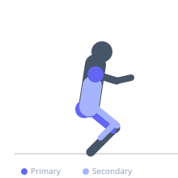
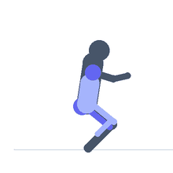

Exercise guide / Cossack Squat with Overhead Plate
Cossack Squat with Overhead Plate
A loaded cossack squat performed with a weight plate held overhead. The overhead position shifts the center of mass upward and forward, demanding more thoracic extension, shoulder stability, and ankle dorsiflexion than the unloaded version. The combined demands of deep lateral hip mobility (cossack) with overhead stability create a full-body mobility and strength stimulus. Used in advanced mobility programming, weightlifting preparation, and functional strength development.
Primary muscles
adductor magnus
gluteus maximus
deltoid anterior
Secondary muscles
rectus femoris
erector spinae
soleus
Stabilizers
supraspinatus
transverse abdominis
Equipment
Weight Plates


Starting position
- Stand with feet approximately 2-2.5 times shoulder-width apart, toes slightly out. Hold a weight plate (5-10 kg) overhead with arms fully extended.
Setup
- Master the unloaded cossack squat before adding the overhead plate. Use a very light plate initially (5 kg or less) to feel the balance shift.
Steps
- Step 1: Begin standing with the plate overhead, arms extended, feet wide.
- Step 2: Shift weight to the right, bending the right knee deeply into the cossack squat position while keeping the plate overhead.
- Step 3: Keep the squat heel flat, chest up, and plate directly overhead (not in front).
- Step 4: Drive through the right foot to transition through center, then descend to the left side. Alternate sides in a flowing pattern.
Coaching cues
- Keep the plate directly overhead — if it drifts forward, the torso will too
- Drive the squat heel into the floor — heel down at all costs
- Feel the stretch from the inner thigh to the outer shoulder on each side
Breathing
- Exhale as you descend into the squat. Inhale as you rise through center.
Range of motion
- Full depth cossack squat with the heel flat and the plate locked overhead.
Tempo
- 3-5s hold at each bottom position. Slow controlled transitions.
Common mistakes
- Letting the plate drift forward rather than staying directly overhead — this causes forward torso lean
- Heel of the squatting side lifting — work on ankle mobility if this occurs
- Using too heavy a plate before the movement pattern is solid
Safety
- Only add the overhead component after the unloaded cossack squat is mastered
- Avoid if shoulder mobility prevents a true overhead lockout — the plate must be directly overhead, not in front
Training
- mobility: 5–8 reps
- mobility: 2–3 sets
- Rest: {'mobility': 60}